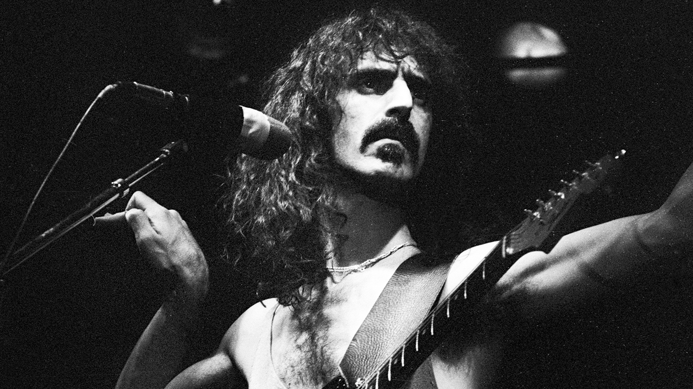
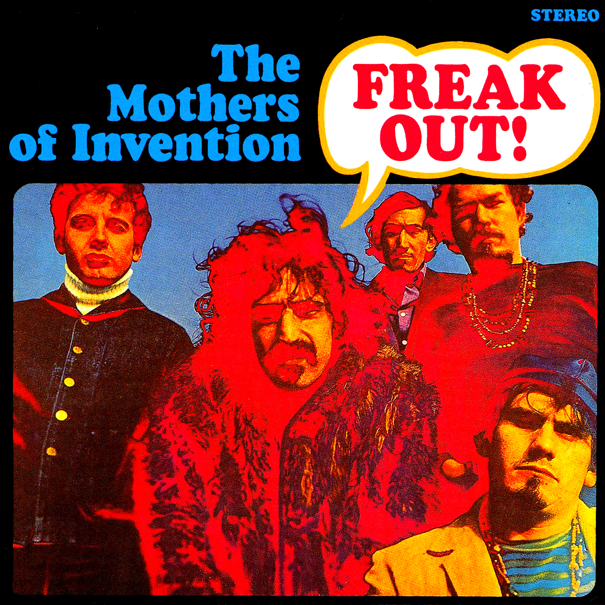

Frank Vincent Zappa (December 21, 1940 – December 4, 1993) was an American multi-instrumentalist musician,
composer, and bandleader. His work is characterized by nonconformity, free-form improvisation, sound
experiments,
musical virtuosity, and satire of American culture. In a career spanning more than 30 years, Zappa composed
rock,
pop, jazz, jazz fusion, orchestral and musique concrète works, and produced almost all of the 60-plus albums
that
he released with his band the Mothers of Invention and as a solo artist. Zappa also directed feature-length
films
and music videos, and designed album covers. He is considered one of the most innovative and stylistically
diverse
rock musicians of his era.
As a self-taught composer and performer, Zappa's diverse musical influences led him to create music that was sometimes difficult to categorize. While in his teens, he acquired a taste for 20th-century classical modernism, African-American rhythm and blues, and doo-wop music. He began writing classical music in high school, while at the same time playing drums in rhythm and blues bands, later switching to electric guitar. His 1966 debut album with the Mothers of Invention, Freak Out!, combined songs in conventional rock and roll format with collective improvisations and studio-generated sound collages. He continued this eclectic and experimental approach whether the fundamental format was rock, jazz, or classical.
One of the Best Musicians in the history of the Earth!
As a self-taught composer and performer, Zappa's diverse musical influences led him to create music that was sometimes difficult to categorize. While in his teens, he acquired a taste for 20th-century classical modernism, African-American rhythm and blues, and doo-wop music. He began writing classical music in high school, while at the same time playing drums in rhythm and blues bands, later switching to electric guitar. His 1966 debut album with the Mothers of Invention, Freak Out!, combined songs in conventional rock and roll format with collective improvisations and studio-generated sound collages. He continued this eclectic and experimental approach whether the fundamental format was rock, jazz, or classical.
Essential Frank Zappa Albums
- 1966 - Freak Out! (with The Mothers of Invention)
- 1968 - We're Only in It for the Money (with The Mothers of Invention)
- 1969 - Hot Rats
- 1970 - Chunga's Revenge
- 1972 - The Grand Wazoo (with The Mothers of Invention)
- 1973 - Over-Nite Sensation (with The Mothers of Invention)
- 1974 - Apostrophe (')
- 1975 - Bongo Fury (with Captain Beefheart and The Mothers of Invention)
- 1982 - Ship Arriving Too Late to Save a Drowning Witch
- 1984 - Them or Us
- 1988 - Guitar
- 1996 - The Lost Episodes
"Information is not knowledge. Knowledge is not wisdom. Wisdom is not truth. Truth is not beauty. Beauty is not love. Love is not music. Music is THE BEST!"
-- Frank Zappa